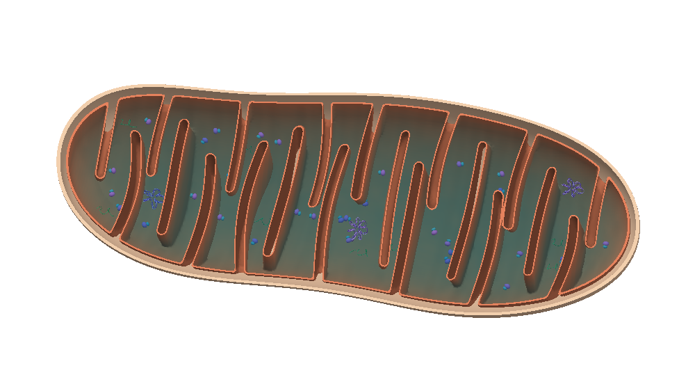

М.И.Р. • MITOCHONDRIA
Загрузка 3D-модели…
200 нм
Извлечь для изучения
Выберите одну структуру для извлечения.
Наружная мембранаВнутренняя мембранаМатрикс
Учебная модель • условная длина 2 мкм • молекулярные структуры схематичны, при извлечении увеличены.